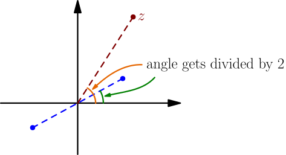
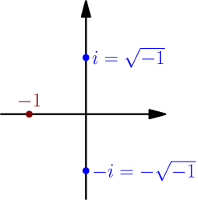
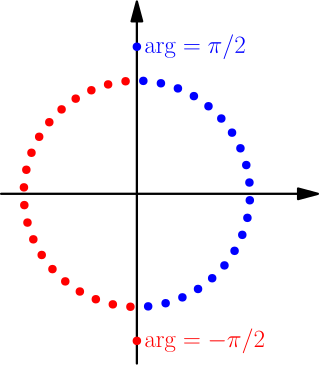
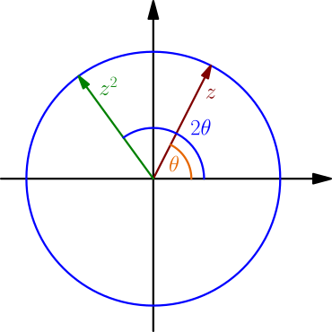

Square Root of Complex Number¶
The square root of a real number $a \ge 0$ is a number that gives $a$ when multiplied with itself. For example, $\sqrt{4}=2$ because $2^2 = 4$. However, we also have $(-2)^2 = 4$, so it seems like $\sqrt{4}=-2$. To avoid getting $2=-2$, we require that $\sqrt{a}$ is not negative. Then all numbers that give $a$ when multiplied with themselves are $\pm \sqrt{a}$, which is why $\pm$ appears in front of square root so often.
Let's generalize this to complex numbers.
With angles and lengths¶
We can define the square root of any complex number $z$ by requiring $(\sqrt{z})^2 = z$, just like with real numbers. Because of how multiplication adds angles and multiplies lengths, this means that $$ \begin{align} \abs{\sqrt{z}}^2 &= \abs{z}, \\ 2(\text{angle of $\sqrt{z}$}) &= \text{angle of $z$}. \end{align} $$ Solving for the length and angle of $\sqrt{z}$, we get $$ \begin{align} \abs{\sqrt{z}} &= \sqrt{\abs{z}}, \\ \text{angle of $\sqrt{z}$} &= \frac{\text{angle of $z$}}{2}. \end{align} $$ As usual, if $z = 0$, the angle equation is not needed because the length formula gives $\sqrt{0}=0$. Any nonzero complex number $z \ne 0$ has infinitely many angles, differing from each other by $2\pi$, which can be written as $$ \text{all angles of $z$} = \arg(z) + k2\pi, $$ where $k$ is any integer. Then we have $$ \text{angle of $\sqrt{z}$} = \frac{\arg(z) + k2\pi}{2} = \frac{\arg(z)}{2} + k\pi. $$ If $k$ is even, then $+k\pi$ adds some number of full turns to the angle and can be ignored. If $k$ is odd, then $+k\pi$ adds some number of full turns, and also adds a half-turn $\pi$ which means flipping to the opposite side of $0$. So, we get two possible values of $\sqrt{z}$, with equal lengths but on opposite sides of $0$. In the below picture, the blue dots are the possible values of $\sqrt{z}$.

The only thing left to do is to decide which of these should be called $\sqrt{z}$. Because of the flipping, the other one will then be $-\sqrt{z}$, and $\pm\sqrt{z}$ will appear commonly just like with real numbers.
Let $z$ be any complex number. Then $\pm\sqrt{z}$ are the only numbers that give $z$ when multiplied with themselves.
- If one of $\pm\sqrt{z}$ is on the right side of the imaginary axis and the other is on the left side, then the one on the right side is called $\sqrt{z}$.
- Otherwise both of $\pm\sqrt{z}$ are on the imaginary axis, and $\sqrt{z}$ is the one that is above the real axis.
Note that now we can put any complex number inside square root, including negative real numbers.
Examples:
-
The length of $\pm\sqrt{-1}$ is $\sqrt{\abs{-1}}=1$.
Because the angle of $-1$ is 180 degrees, one of $\pm\sqrt{-1}$ has angle 90 degrees.
So, one of $\pm\sqrt{-1}$ is $i$ and the other is $-i$.
Because $i$ and $-i$ are both on the imaginary axis, with $i$ above $-i$, we have $\sqrt{-1} = i$.

- The length of $\pm\sqrt{4}$ is $2$. Because the angle of $4$ is $0$, one of $\pm\sqrt{4}$ has angle $0/2=0$, i.e. one of $\pm\sqrt{4}$ is a positive real number. The other one will then be a negative real number. So, $\pm\sqrt{4}$ are $2$ and $-2$. Because $2$ is on the right side of the imaginary axis, $\sqrt{4}=2$. This works with any positive number instead of $4$, so the square root we have defined is compatible with the square root of nonnegative real numbers.
The below picture shows how distinguisihing $\sqrt{z}$ and $-\sqrt{z}$ works. Blue complex numbers can be written as $\sqrt{z}$, with some complex number $z$, and red numbers are the corresponding $-\sqrt{z}$ numbers.

Using the convention $-\pi < \arg(z) \le \pi$, the distinguishing of $\pm\sqrt{z}$ becomes $$ \arg(\sqrt{z}) \in \left( -\frac{\pi}{2},\frac{\pi}{2} \right] \quad \text{and} \quad \arg(-\sqrt{z}) \notin \left( -\frac{\pi}{2},\frac{\pi}{2} \right]. $$ Now we get $$ -\pi < 2\arg(\sqrt{z}) \le \pi. $$ Because angles get added when multiplying complex numbers, $2\arg(\sqrt{z})$ is an angle of $(\sqrt{z})^2=z$. Another angle of $z$ is $\arg(z)$, for which we also have $-\pi < \arg(z) \le \pi$. Because only one angle of $z$ is between $-\pi$ and $\pi$, we must have $\arg(z)=2\arg(\sqrt{z})$.
Using the convention $-\pi < \arg(z) \le \pi$, we have $$ \arg(\sqrt{z}) = \frac{\arg(z)}{2}. $$
Broken rules¶
The rules $$ \sqrt{zw}=\sqrt{z}\sqrt{w} \quad \text{and} \quad \sqrt{\frac{z}{w}}=\frac{\sqrt{z}}{\sqrt{w}} $$ do not work for all complex numbers $z$ and $w$. To show that the first rule doesn't work, we can choose $z=w=-1$. Then we get $$ \sqrt{-1}\sqrt{-1} = (\sqrt{-1})^2 = -1 $$ and $$ \sqrt{(-1)(-1)} = \sqrt{1} = 1. $$ For the second rule, we can choose $z=1$ and $w=-1$. We get $$ \sqrt{\frac{1}{-1}} = \sqrt{-1} = i $$ and $$ \frac{\sqrt{1}}{\sqrt{-1}} = \frac{1}{i} = \frac{-i}{i(-i)} = \frac{-i}{-(-1)} = -i. $$ From these examples, it seems like the rules might work with additional $\pm$ signs, as in $$ \sqrt{zw}=\pm\sqrt{z}\sqrt{w} \quad \text{and} \quad \sqrt{\frac{z}{w}}=\pm\frac{\sqrt{z}}{\sqrt{w}}. $$ This is indeed true. To see why, notice that $$ (\sqrt{z}\sqrt{w})^2 = (\sqrt{z})^2(\sqrt{w})^2 = zw. $$ The only two numbers that give $zw$ when squared are $\sqrt{zw}$ and $-\sqrt{zw}$, and because $\sqrt{z}\sqrt{w}$ is one of them, we must have $$ \sqrt{z}\sqrt{w}= \pm \sqrt{zw}, $$ or written slightly differently, $$ \sqrt{zw} = \pm \sqrt{z}\sqrt{w}. $$ We can similarly derive the rule for division.
For all complex numbers $z$ and $w$, we have $$ \sqrt{zw}=\pm\sqrt{z}\sqrt{w}. $$ If $w \ne 0$, then $$ \sqrt{\frac{z}{w}}=\pm\frac{\sqrt{z}}{\sqrt{w}}. $$
For any positive real number $p$, we have $$ \text{angle of $zp$} = \text{angle of $z$}, $$ and because the angle of square root depends only on the angle of the complex number inside, we get $$ \text{angle of $\sqrt{zp}$} = \text{angle of $\sqrt{z}$}. $$ On the other hand, because $\sqrt{p}$ is also positive, we also have $$ \text{angle of $\sqrt{z}\sqrt{p}$} = \text{angle of $\sqrt{z}$}. $$ By combining these results, we get $$ \text{angle of $\sqrt{zp}$} = \text{angle of $\sqrt{z}\sqrt{p}$}, $$ so the $\pm$ in $\sqrt{zp}=\pm\sqrt{z}\sqrt{p}$ must be $+$, and it actually works without $\pm$. That also works for $p=0$, because then both sides are zero.
If $p$ is a real number and $p \ge 0$, then $$ \sqrt{zp} = \sqrt{z}\sqrt{p}. $$
Using this, we can for example calculate $$ \sqrt{-5} = \sqrt{(-1)5} = \sqrt{-1}\sqrt{5} = i\sqrt{5}. $$ We also get $$ \sqrt{\frac{z}{p}} = \sqrt{z\frac{1}{p}} = \sqrt{z}\sqrt{\frac{1}{p}} = \sqrt{z}\frac{\sqrt{1}}{\sqrt{p}} = \frac{\sqrt{z}}{\sqrt{p}} $$ for any positive $p$, where we used $\sqrt{a/b}=\sqrt{a}/\sqrt{b}$ with positive real numbers $a=1$ and $b=p$. We obviously can't allow $p=0$.
If $p$ is a real number and $p > 0$, then $$ \sqrt{\frac{z}{p}} = \frac{\sqrt{z}}{\sqrt{p}}. $$
Without angles and lengths¶
We find a formula for $\sqrt{a+bi}$ that doesn't require calculating the angle of $a+bi$. Let $x+yi = \sqrt{a+bi}$. Then we have $$ a+bi = (x+yi)^2 = x^2 + 2xyi + i^2y^2 = x^2-y^2 + 2xyi. $$ By comparing real and imaginary parts, we get $$ \left\{\begin{aligned} x^2-y^2 &= a \\ 2xy &= b. \end{aligned}\right. $$ We already know how to calculate the square root of a real number (both negative and nonnegative), so we can assume $b \ne 0$. From the second equation, we see that then $x$ and $y$ are nonzero too. So, we can divide by $x$ and we get $y = \frac{b}{2x}$ from the second equation. Let's plug that into the first equation: $$ \begin{align} x^2 - \left( \frac{b}{2x} \right)^2 &= a \\ x^2 - \frac{b^2}{4x^2} &= a \\ (x^2)^2 - \frac{b^2}{4} &= ax^2 \\ (x^2)^2 - ax^2 - \frac{b^2}{4} &= 0 \end{align} $$ By applying the quadratic formula (TODO) with $x^2$ instead of $x$, we get $$ \begin{align} x^2 &= \frac{-(-a) \pm\sqrt{(-a)^2 - 4\left(-\frac{b^2}{4}\right)}}{2} \\ &= \frac{a\pm\sqrt{a^2+b^2}}{2} = \frac{a\pm r}{2}, \end{align} $$ where $r = \sqrt{a^2+b^2}$ is the length of $a+bi$. Because $b$ is a nonzero real number, we have $b^2 > 0$ and so $$ r = \sqrt{a^2+b^2} > \sqrt{a^2} = \abs{a}. $$ This means that $a-r$ is negative, regardless of whether $a$ is positive, negative or zero. Because $x^2$ is not negative, we must choose $+$ and we get $$ x^2 = \frac{r+a}{2}. $$ Because the point corresponding to the square root of a complex number cannot be on the left side of the imaginary axis, we must have $x \ge 0$. So, we get $$ x = \sqrt{\frac{r+a}{2}}. $$ We actually have $x > 0$ because $2xy \ne 0$. Now $y = \frac{b}{2x}$ has the same sign as $b$; it's positive if $b$ is positive, and negative if $b$ is negative. To actually find $y$, we can use $x^2-y^2=a$, and we get $$ y^2 = x^2-a = \frac{r+a}{2}-a = \frac{r+a-2a}{2} = \frac{r-a}{2}. $$ So, we have $$ y = \pm\sqrt{\frac{r-a}{2}}, $$ where $\pm$ is $+$ when $b$ is positive and $-$ when $b$ is negative.
Let $a+bi$ be a complex number with $b \ne 0$. Then $$ \sqrt{a+bi} = \sqrt{\frac{r+a}{2}} \pm i\sqrt{\frac{r-a}{2}}, $$ where $r=\abs{a+bi}=\sqrt{a^2+b^2}$, and $\pm$ is $+$ when $b$ is positive and $-$ when $b$ is negative.
If $b=0$, then we have $r=\abs{a}$ and the right side of the formula becomes $$ \sqrt{\frac{\abs{a}+a}{2}} \pm i\sqrt{\frac{\abs{a}-a}{2}}. $$ If $a$ is positive or zero, this is $\sqrt{a} \pm 0$, and if $a$ is negative, this is $0 \pm i\sqrt{\abs{a}}$. So, if we choose $+$ whenever $b=0$, this result also works in that case.
Example: $\sin^2(\theta)$ and $\cos^2(\theta)$¶
Let $\theta$ be any angle, and let $z$ be a complex number on the origin-centered unit circle with angle $\theta$. Like in the derivation of de Moivre's formula, $z^2$ is also on the unit circle with angle $2\theta$, and we have $$ \begin{align} z&=\cos(\theta) + i\sin(\theta), \\ z^2&=\cos(2\theta)+i\sin(2\theta). \end{align} $$

Because $z = \pm\sqrt{z^2}$, we have $$ \cos(\theta)+i\sin(\theta) = \pm\sqrt{\cos(2\theta)+i\sin(2\theta)}. $$ Now we can use the formula for $\sqrt{a+bi}$ with $a=\cos(2\theta)$ and $b=\sin(2\theta)$. Because $z^2$ is on the unit circle, its length is $r=\sqrt{a^2+b^2}=1$, and we get $$ \cos(\theta)+i\sin(\theta) = \pm\left( \sqrt{\frac{1+\cos(2\theta)}{2}} \pm i\sqrt{\frac{1-\cos(2\theta)}{2}} \right). $$ By comparing real and imaginary parts, we get $$ \begin{align} \cos(\theta) &= \pm \sqrt{\frac{1+\cos(2\theta)}{2}} \\ \sin(\theta) &= \pm \sqrt{\frac{1-\cos(2\theta)}{2}}, \end{align} $$ where we combined the two $\pm$ signs into another $\pm$ sign for the imaginary part of the right side. Finally, to get rid of all $\pm$ signs and square roots, we can square both sides to get $$ \begin{align} \cos^2(\theta) &= \frac{1+\cos(2\theta)}{2} \\ \sin^2(\theta) &= \frac{1-\cos(2\theta)}{2}. \end{align} $$
For all angles $\theta$, we have $$ \begin{align} \cos^2(\theta) &= \frac{1+\cos(2\theta)}{2}, \\ \sin^2(\theta) &= \frac{1-\cos(2\theta)}{2}. \end{align} $$